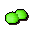

Orb of protection

| Config name | orbs_of_protection |
| Item id | 588 |
| Weight | 2kg |
| Members | Yes |
| Tradeable | No |
| Stackable | No |
| Defined in | scripts/quests/quest_tree/configs/quest_tree.obj |
Orb of protection
Two strange glowing green orbs.
Dropped by
| NPC | Level | Quantity | Rarity | Via | Notes |
|---|---|---|---|---|---|
| 112 | 1 | Always | if %treequest = ^tree_returned_first_orb if %treequest = ^tree_defeated_warlord otherwise given directly |
Quests
Referenced in scripts
scripts/areas/area_gnome/scripts/king_bolren.rs2scripts/quests/quest_tree/scripts/khazard_warlord.rs2